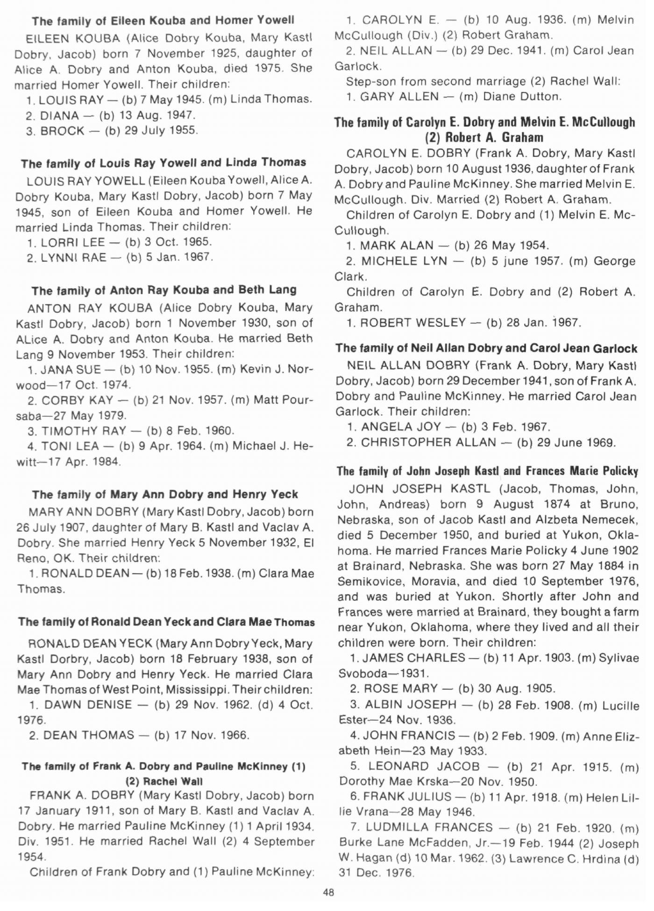

The book · The Family of Jacob Kastl
Page 48 The family of Eileen Kouba and Homer Yowell


Transcription
The family of Eileen Kouba and Homer Yowell
EILEEN KOUBA (Alice Dobry Kouba, Mary Kastl Dobry, Jacob) born 7 November 1925, daughter of Alice A. Dobry and Anton Kouba, died 1975. She married Homer Yowell. Their children:
- LOUIS RAY — (b) 7 May 1945. (m) Linda Thomas.
- DIANA — (b) 13 Aug. 1947.
- BROCK — (b) 29 July 1955.
The family of Louis Ray Yowell and Linda Thomas
LOUIS RAY YOWELL (Eileen Kouba Yowell, Alice A. Dobry Kouba, Mary Kastl Dobry, Jacob) born 7 May 1945, son of Eileen Kouba and Homer Yowell. He married Linda Thomas. Their children:
- LORRI LEE — (b) 3 Oct. 1965.
- LYNNI RAE — (b) 5 Jan. 1967.
The family of Anton Ray Kouba and Beth Lang
ANTON RAY KOUBA (Alice Dobry Kouba, Mary Kastl Dobry, Jacob) born 1 November 1930, son of ALice A. Dobry and Anton Kouba. He married Beth Lang 9 November 1953. Their children:
- JANA SUE — (b) 10 Nov. 1955. (m) Kevin J. Norwood—17 Oct. 1974.
- CORBY KAY — (b) 21 Nov. 1957. (m) Matt Poursaba—27 May 1979.
- TIMOTHY RAY — (b) 8 Feb. 1960.
- TONI LEA — (b) 9 Apr. 1964. (m) Michael J. Hewitt—17 Apr. 1984.
The family of Mary Ann Dobry and Henry Yeck
MARY ANN DOBRY (Mary Kastl Dobry, Jacob) born 26 July 1907, daughter of Mary B. Kastl and Vaclav A. Dobry. She married Henry Yeck 5 November 1932, El Reno, OK. Their children:
- RONALD DEAN — (b) 18 Feb. 1938. (m) Clara Mae Thomas.
The family of Ronald Dean Yeck and Clara Mae Thomas
RONALD DEAN YECK (Mary Ann Dobry Yeck, Mary Kastl Dorbry, Jacob) born 18 February 1938, son of Mary Ann Dobry and Henry Yeck. He married Clara Mae Thomas of West Point, Mississippi. Their children:
- DAWN DENISE — (b) 29 Nov. 1962. (d) 4 Oct. 1976.
- DEAN THOMAS — (b) 17 Nov. 1966.
The family of Frank A. Dobry and Pauline McKinney (1) (2) Rachel Wall
FRANK A. DOBRY (Mary Kastl Dobry, Jacob) born 17 January 1911, son of Mary B. Kastl and Vaclav A. Dobry. He married Pauline McKinney (1) 1 April 1934. Div. 1951. He married Rachel Wall (2) 4 September 1954.
Children of Frank Dobry and (1) Pauline McKinney:
- CAROLYN E. — (b) 10 Aug. 1936. (m) Melvin McCullough (Div.) (2) Robert Graham.
- NEIL ALLAN — (b) 29 Dec. 1941. (m) Carol Jean Garlock.
Step-son from second marriage (2) Rachel Wall:
- GARY ALLEN — (m) Diane Dutton.
The family of Carolyn E. Dobry and Melvin E. McCullough (2) Robert A. Graham
CAROLYN E. DOBRY (Frank A. Dobry, Mary Kastl Dobry, Jacob) born 10 August 1936, daughter of Frank A. Dobry and Pauline McKinney. She married Melvin E. McCullough. Div. Married (2) Robert A. Graham.
Children of Carolyn E. Dobry and (1) Melvin E. McCullough.
- MARK ALAN — (b) 26 May 1954.
- MICHELE LYN — (b) 5 june 1957. (m) George Clark.
Children of Carolyn E. Dobry and (2) Robert A. Graham.
- ROBERT WESLEY — (b) 28 Jan. 1967.
The family of Neil Allan Dobry and Carol Jean Garlock
NEIL ALLAN DOBRY (Frank A. Dobry, Mary Kastl Dobry, Jacob) born 29 December 1941, son of Frank A. Dobry and Pauline McKinney. He married Carol Jean Garlock. Their children:
- ANGELA JOY — (b) 3 Feb. 1967.
- CHRISTOPHER ALLAN — (b) 29 June 1969.
The family of John Joseph Kastl and Frances Marie Policky
JOHN JOSEPH KASTL (Jacob, Thomas, John, John, Andreas) born 9 August 1874 at Bruno, Nebraska, son of Jacob Kastl and Alzbeta Nemecek, died 5 December 1950, and buried at Yukon, Oklahoma. He married Frances Marie Policky 4 June 1902 at Brainard, Nebraska. She was born 27 May 1884 in Semikovice, Moravia, and died 10 September 1976, and was buried at Yukon. Shortly after John and Frances were married at Brainard, they bought a farm near Yukon, Oklahoma, where they lived and all their children were born. Their children:
- JAMES CHARLES — (b) 11 Apr. 1903. (m) Sylivae Svoboda—1931.
- ROSE MARY — (b) 30 Aug. 1905.
- ALBIN JOSEPH — (b) 28 Feb. 1908. (m) Lucille Ester—24 Nov. 1936.
- JOHN FRANCIS — (b) 2 Feb. 1909. (m) Anne Elizabeth Hein—23 May 1933.
- LEONARD JACOB — (b) 21 Apr. 1915. (m) Dorothy Mae Krska—20 Nov. 1950.
- FRANK JULIUS — (b) 11 Apr. 1918. (m) Helen Lillie Vrana—28 May 1946.
- LUDMILLA FRANCES — (b) 21 Feb. 1920. (m) Burke Lane McFadden, Jr.—19 Feb. 1944 (2) Joseph W. Hagan (d) 10 Mar. 1962. (3) Lawrence C. Hrdina (d) 31 Dec. 1976.
Transcriber’s notes
The Frank A. Dobry entry starts at the bottom of the left column ('Children of Frank Dobry and (1) Pauline McKinney:') and its child list continues at the top of the right column. Printed as-is: 'ALice A. Dobry', 'Mary Kastl Dorbry', '5 june 1957' (lowercase), 'Sylivae', 'Ester'. Heading 'The family of Frank A. Dobry and Pauline McKinney (1) / (2) Rachel Wall' and the Carolyn E. Dobry heading are printed on two lines; joined here.